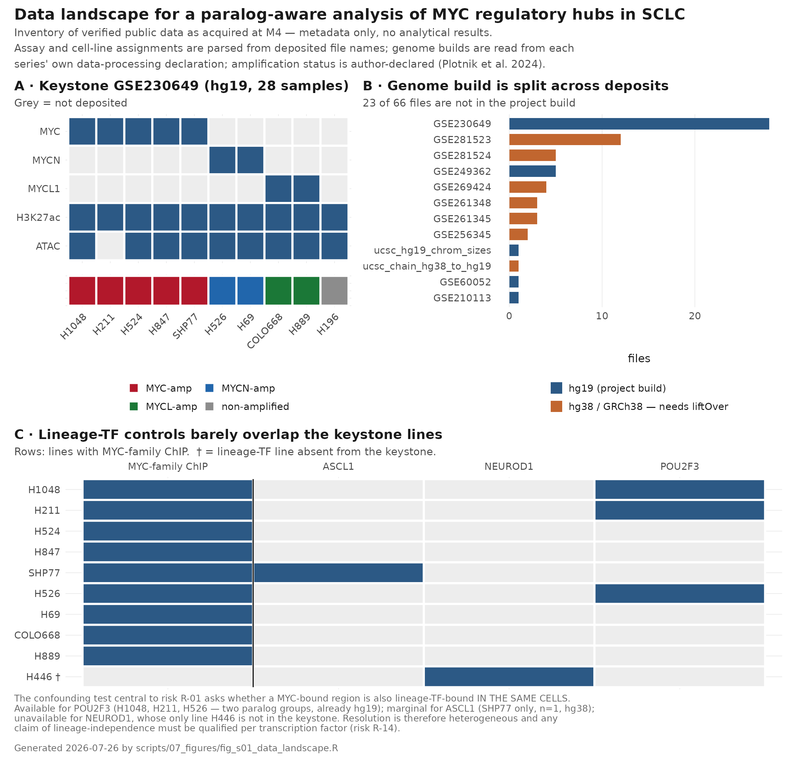
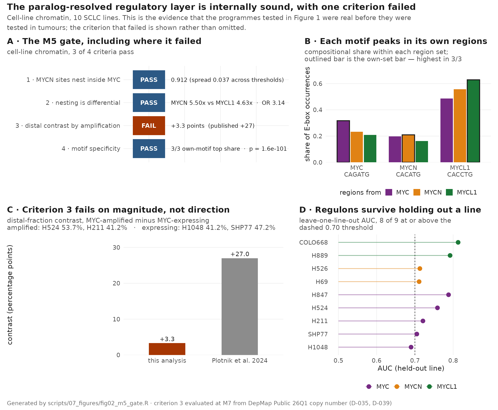
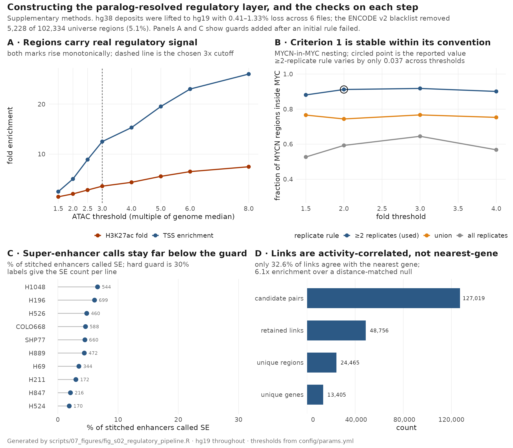
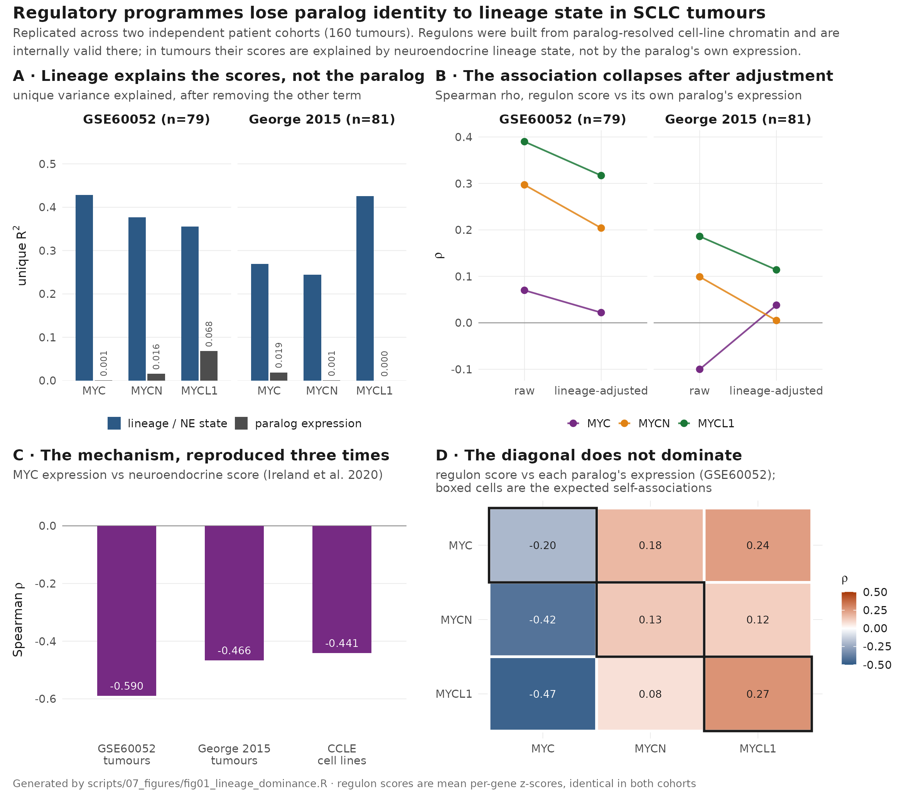
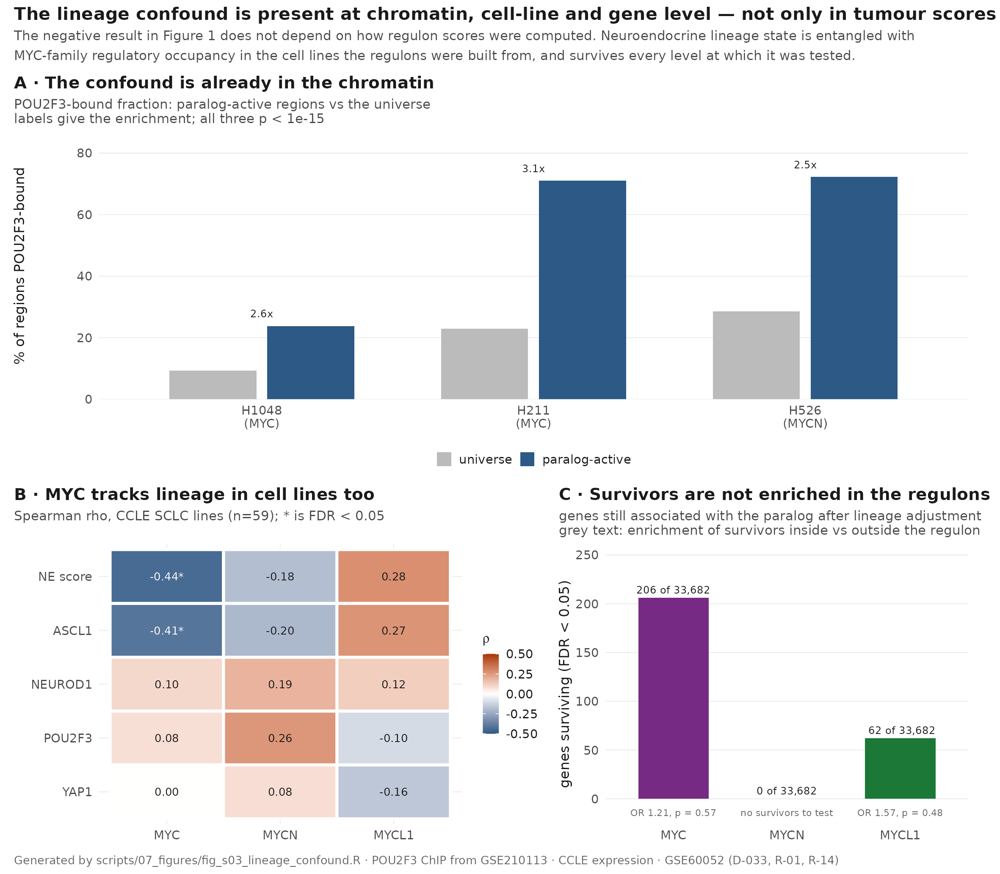
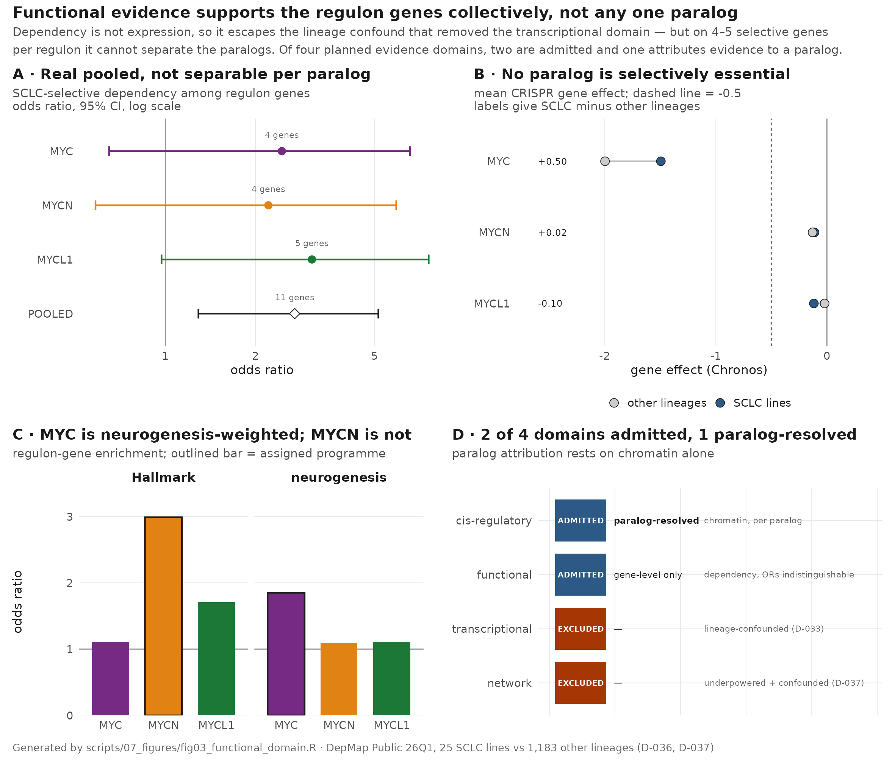
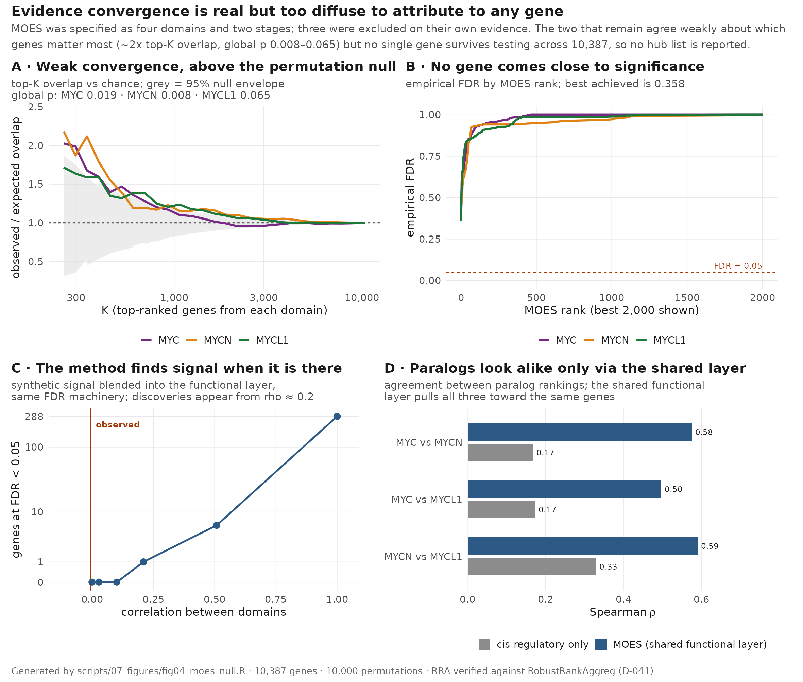
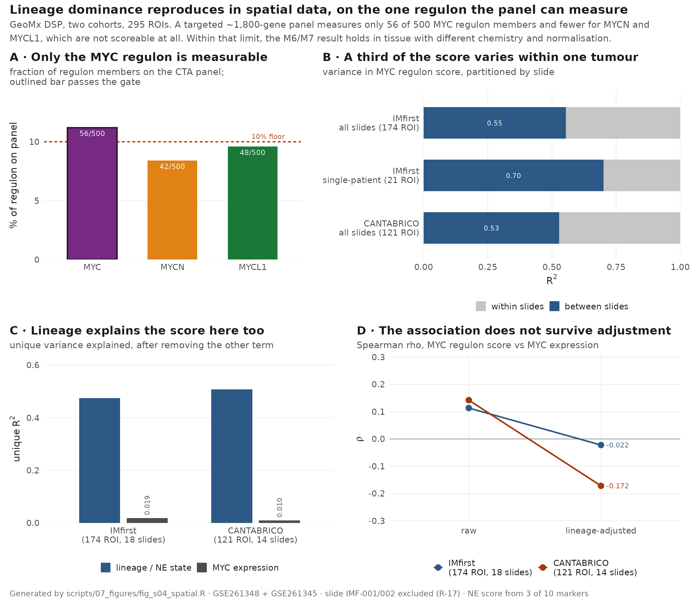

An enhancer-anchored regulon analysis across cell lines, patient tumours, functional screens and spatial tissue
today
MOES is a heuristic prioritisation, not a predictive or clinically validated model (project contract, section 7). No statement in this report should be read as identifying a treatment target or a causal mechanism. Where a conclusion is provisional it is labelled provisional. Treatment-outcome, survival and immune-exclusion analyses are out of scope by design.
This analysis converts paralog-resolved MYC-family binding in SCLC into enhancer-anchored regulons and asks whether those regulons retain paralog identity outside the cell lines they were built from.
The regulons are internally coherent in cell-line chromatin. Three of four pre-registered gate criteria pass (section 4). Leave-one-line-out AUC reaches the 0.70 threshold in 8 of 9 held-out lines, and the MYC regulon independently reproduces the MYC-enhancer→neurogenesis association reported by Plotnik et al. (OR 1.85, p = 7e-06).
They do not retain paralog identity in patient tumours. Across 160 tumours in two independent cohorts, neuroendocrine lineage state explains 0.24–0.43 of the unique variance in regulon score against 0.000–0.068 for the paralog’s own expression, and no association survives lineage adjustment in the replication cohort (section 5). This outcome was pre-registered as a reportable finding rather than a failure, and it is reported as one.
The confound is not an artefact of bulk scoring. It is present in the chromatin the regulons were built from, in cell lines, gene-by-gene genome-wide, and in spatial tissue (sections 6 and 9).
Evidence integration returns no prioritised hubs. Three of four planned evidence domains were excluded on their own evidence. The two that remain converge weakly at the top of their rankings — up to 2.2x more overlap than chance, global p 0.008–0.065 — but no individual gene survives testing across 10,387 genes (section 8).
The contribution is therefore the framework, the audit trail, and two well-characterised negative results — not a hub list.
How do MYC-associated transcriptional and epigenetic regulatory programmes shape SCLC state, and which downstream regulatory hubs are robust enough, across independent evidence layers, to warrant further investigation?
Plotnik et al. 2024 established that MYC, MYCN and MYCL1 occupy distinct enhancer repertoires in SCLC cell lines. That is prior work and is not re-claimed here. Three things were unaddressed and are attempted here:
Item 1 succeeded, item 2 produced a negative result, and item 3 produced a null.
All data are public. No data files are held in version control; they are reproduced by download scripts against a checksum manifest.
| Layer | Source | Role |
|---|---|---|
| Cell-line chromatin | GSE230649 keystone + 9 supporting GEO series | MYC-family ChIP, H3K27ac, ATAC — 10 SCLC lines |
| Patient tumours | GSE60052 (n=79), George 2015 (n=81) | regulon scoring and replication |
| Cell lines | CCLE / cBioPortal (n=59 SCLC) | lineage association, network feasibility |
| Functional screen | DepMap Public 26Q1 (25 SCLC vs 1,183 other lines) | selective dependency |
| Spatial tissue | GSE261348 (175 ROI), GSE261345 (121 ROI) | coherence and orthogonal validation |
Project genome build is hg19, mandated by the keystone series. Every coordinate-handling step asserts the build; hg38 deposits were lifted with loss rates recorded per file.

Data landscape: assay coverage per cell line, the genome-build split across deposits, and the limited overlap between MYC-family ChIP lines and lineage-TF control lines.
Assay coverage is uneven by design of the public record rather than by choice. MYC has five contributing ChIP lines; MYCN and MYCL1 have two each. One line carries H3K27ac and ATAC but no MYC-family ChIP, and one carries MYC ChIP but no ATAC. The lineage-TF controls needed for the confounding analysis overlap the keystone lines only partially — POU2F3 in three, ASCL1 in one, NEUROD1 in none — which is why resolution of the confound is reported per transcription factor and never pooled.

The M5 gate on cell-line chromatin, including the criterion that failed.
Signal was quantified over an ATAC-defined consensus region universe (no de novo peak calling; the keystone series ships bedGraph only), filtered against the ENCODE hg19 blacklist v2, stitched into super-enhancers with a knee-point cutoff, and linked to genes by distance-weighted, activity-correlated linking. Regulons are the top-ranked genes by aggregate link score.

Construction of the regulatory layer and the check on each step: threshold calibration, convention stability, the super-enhancer guard, and peak-to-gene linking.
Two of those steps carry guards added after an initial rule failed. The first super-enhancer stitching rule returned every stitched enhancer as a super-enhancer for one line, and was replaced by a knee-point cutoff with a hard ceiling. Peak-to-gene linking initially assigned distal regions only, which left promoter-bound genes out of every regulon and understated the enrichment. Both corrections are recorded in the decision log.
The ATAC threshold is not load-bearing: TSS enrichment and H3K27ac fold both rise monotonically across the whole range tested, so conclusions do not depend on where the cutoff was placed. The replicate convention, by contrast, does matter, and is shown rather than hidden — the nesting fraction behind gate criterion 1 varies by only 0.037 within the pre-specified ≥2-replicate rule but sits at materially different values under the union and all-replicate conventions.
| Criterion | Observed | Pass |
|---|---|---|
| 1_mycn_in_myc | 0.912 (spread 0.037) | PASS |
| 2_differential_nesting | MYCN 5.50x vs MYCL1 4.63x, OR 3.14, p=1.1e-60 | PASS |
| 3_distal_contrast | amplified 47.5% vs expressing 44.2%, +3.3 pts (published +27); direction reproduces, magnitude fails | FAIL |
| 4_motif_specificity | 3/3 own-motif top share (p=0.037); chi-sq p=1.6e-101 | PASS |
Criterion 3 — the distal-fraction contrast between MYC-amplified and MYC-expressing lines — fails on magnitude while reproducing in direction (+3.3 points against a published +27). Contributing factors, none separable at two lines versus two: the shared ATAC-defined universe is ~84% distal by construction, which compresses the achievable range; the source study called peaks de novo per line with no shared grid; and one line is absent from DepMap, leaving the expressing arm at n=2. No significance test is applied, because none would be honest at that n.
Leave-one-line-out AUC reaches the 0.70 threshold in 8 of 9 held-out lines; the exception is MYC/H1048 at 0.69. Cross-paralog Jaccard stays well below the 0.60 limit. This is internal coherence only — it shows the regulons are not driven by a single contributing line, not that they transfer to tumours.
| Paralog | Hallmark OR | Neurogenesis OR | Neurogenesis p | |
|---|---|---|---|---|
| 1 | MYC | 1.11 | 1.85 | 0.000 |
| 3 | MYCN | 2.99 | 1.09 | 0.326 |
| 5 | MYCL1 | 1.71 | 1.11 | 0.270 |
The MYC regulon is neurogenesis-weighted, independently reproducing the enhancer-to-neurogenesis link reported by Plotnik et al. The MYCN regulon is not; it is Hallmark/housekeeping-weighted instead. The source study grouped MYCN with MYC. This is a discordance, recorded as such.

Regulatory programmes lose paralog identity to lineage state in SCLC tumours.
Regulons were scored as mean per-gene z-scores — universe-independent, so the score does not depend on which other genes were measured — in GSE60052 (n=79) and replicated in George 2015 (n=81).
| Cohort | Paralog | rho raw | rho adjusted | unique R2 paralog | unique R2 lineage | |
|---|---|---|---|---|---|---|
| rho | GSE60052 | MYC | 0.070 | 0.022 | 0.001 | 0.428 |
| rho1 | GSE60052 | MYCN | 0.297 | 0.204 | 0.016 | 0.377 |
| rho2 | GSE60052 | MYCL1 | 0.390 | 0.317 | 0.068 | 0.355 |
| rho3 | George2015 | MYC | -0.100 | 0.038 | 0.019 | 0.269 |
| rho11 | George2015 | MYCN | 0.099 | 0.005 | 0.001 | 0.244 |
| rho21 | George2015 | MYCL1 | 0.186 | 0.114 | 0.000 | 0.426 |
Unique variance attributable to lineage state exceeds that attributable to the paralog’s own expression by roughly an order of magnitude, in 6 regulon–cohort combinations out of 6. Raw associations collapse toward zero after adjustment for NE score and all four lineage transcription factors. In the replication cohort none survives; the single survivor in the discovery cohort is method-dependent and comes from the regulon that failed programme validation.
If programmes retained paralog identity, the diagonal of the specificity matrix would dominate. It does not (2 of 3 nominal).
At n = 79, |rho| ≥ 0.31 was detectable at 80% power. The observed adjusted associations are well inside that bound, so this is a negative result with power to support it rather than an absence of evidence.
The project contract pre-registered this outcome: if paralog-specific regulons prove inseparable from lineage-TF programmes, the honest conclusion becomes that MYC-paralog regulatory programmes in SCLC are largely inseparable from lineage identity, reported as a negative result with a power analysis. That is what happened, and that is what is reported.

The lineage confound is present at chromatin, cell-line and gene level.
The obvious objection to section 5 is that the null is an artefact of tumour-level scoring. It is not.
| Line | Paralog | % universe POU2F3-bound | % active POU2F3-bound | Enrichment |
|---|---|---|---|---|
| H1048 | MYC | 9.3 | 23.8 | 2.57 |
| H526 | MYCN | 28.6 | 72.3 | 2.52 |
| H211 | MYC | 22.9 | 71.0 | 3.10 |
Chromatin. In the three keystone lines with POU2F3 ChIP, regions active for a MYC-family paralog are POU2F3-bound at 2.5–3.1x the rate of the universe they were drawn from. The entanglement is present before any tumour is scored. Resolution is uneven across lineage factors and was never pooled: POU2F3 has three keystone lines, ASCL1 one, NEUROD1 none.
Cell lines. MYC expression tracks NE score (rho -0.441, FDR 0.00813) across 59 CCLE SCLC lines, independently reproducing Ireland et al. 2020 in a third dataset.
Genes. Of 33,682 genes tested per paralog, the number still associated after lineage adjustment is 206 (MYC), 62 (MYCL1) and 0 (MYCN). Survivors are not concentrated in the regulons — enrichment inside versus outside is OR 1.21 (p 0.566) for MYC — so they do not rescue the paralog-specific claim.

Functional evidence supports the regulon genes collectively, not any one paralog.
| Paralog | Genes tested | Selective | OR | CI low | CI high | p |
|---|---|---|---|---|---|---|
| MYC | 373 | 4 | 2.45 | 0.648 | 6.573 | 0.089 |
| MYCN | 413 | 4 | 2.21 | 0.584 | 5.913 | 0.118 |
| MYCL1 | 375 | 5 | 3.09 | 0.971 | 7.590 | 0.028 |
Pooled across all three regulons the enrichment is real: OR 2.706 (95% CI 1.2898–5.153), p = 0.00477, on 11 selective genes in 984 tested. Because dependency is not expression, this domain escapes the lineage confound that removed the transcriptional domain.
It is not paralog-resolved. The per-paralog odds ratios differ by one gene and their confidence intervals overlap almost completely. MYCL1’s nominal p = 0.0278 carries a 95% CI of 0.971–7.59, which includes 1: Fisher’s exact p and its conditional interval disagree at these counts, which is itself a reason not to read a per-paralog verdict. The pooled test is the powered question.
| Gene | Mean SCLC | Mean other | Delta | FDR | Selective |
|---|---|---|---|---|---|
| MYC | -1.4946 | -1.9975 | 0.5029 | 0.1808 | FALSE |
| MYCL | -0.1170 | -0.0203 | -0.0967 | 0.6699 | FALSE |
| MYCN | -0.1115 | -0.1292 | 0.0177 | 0.8771 | FALSE |
MYC is strongly essential in both groups but less so in SCLC (delta +0.503); MYCN and MYCL sit near zero everywhere. Nothing in this analysis supports intervening on the paralogs themselves.
| Screen | Drug | Gene | n | rho | p | rho (NE-adj) | p (NE-adj) |
|---|---|---|---|---|---|---|---|
| GDSC2 | BIRABRESIB | MYCL | 30 | 0.621 | 0.0003 | 0.631 | 0.0002 |
| GDSC2 | MOLIBRESIB | MYCL | 30 | 0.617 | 0.0003 | 0.587 | 0.0006 |
| GDSC1 | PFI-1 | MYCL | 29 | 0.426 | 0.0213 | 0.429 | 0.0204 |
| GDSC2 | BIRABRESIB | MYC | 30 | -0.390 | 0.0330 | -0.314 | 0.0912 |
| GDSC1 | MOLIBRESIB | MYCN | 31 | -0.351 | 0.0529 | -0.307 | 0.0927 |
| GDSC2 | MOLIBRESIB | MYC | 30 | -0.326 | 0.0784 | -0.231 | 0.2190 |
Across three public screens restricted to SCLC lines and BET inhibitors, MYCL expression correlates with BET-inhibitor AUC — MYCL-high lines are less sensitive — and unlike every other association in this project it survives neuroendocrine adjustment. Three of three MYCL tests are nominal against 0/6 for MYCN and 1/6 for MYC.
That distinction is exactly why it needs the most scepticism, not the least, and it is reported as exploratory and provisional for three reasons:
Direction stated plainly: MYC trends the opposite way (more sensitive, rho −0.390) but does not survive adjustment. Nothing here reproduces or refutes the source study, which tested amplification rather than expression, and a compound (Mivebresib) absent from all three screens.
The transcriptional domain was dropped as lineage-confounded at both aggregate and per-gene level. The network domain failed both of its pre-conditions: only 59 SCLC lines have CCLE expression, below what tree-ensemble inference needs, and MYC expression tracks NE state across those lines (rho -0.441) — the same structure that barred a tumour-based network.

Evidence convergence is real but too diffuse to attribute to any gene.
MOES was specified as a four-domain, two-stage, weight-free Robust Rank Aggregation. It runs on 2 domains, of which 1 attributes evidence to a paralog.
Two things were verified before any score was believed. The cis layer
was rebuilt and asserted to reproduce the committed regulons exactly for
all three paralogs. The n = 2 RRA closed form used in the permutation
loops was checked against RobustRankAggreg (maximum
absolute difference 1.1e-15).
| Paralog | Max top-K overlap vs chance | Global p |
|---|---|---|
| MYC | 2.029 | 0.019 |
| MYCN | 2.185 | 0.008 |
| MYCL1 | 1.716 | 0.065 |
The global p compares the maximum overlap ratio over K against the permutation distribution of that same maximum, controlling family-wise error across the curve. Counting pointwise exceedances would badly overstate this — the K values are nested, so one excursion produces a run of them.
No gene reaches FDR < 0.05 for any paralog. The best FDR achieved is 0.358.
| Injected signal | Layer rho | Min FDR | Genes FDR < 0.05 |
|---|---|---|---|
| 0.00 | 0.000 | 0.878 | 0 |
| 0.05 | 0.028 | 0.721 | 0 |
| 0.10 | 0.101 | 0.084 | 0 |
| 0.20 | 0.209 | 0.018 | 1 |
| 0.40 | 0.508 | 0.004 | 6 |
| 1.00 | 1.000 | 0.000 | 288 |
A positive control blending synthetic signal into the functional layer gives a monotone graded response, so the per-gene null is a property of the evidence, not a dead pipeline. The signal is present in the shape the aggregate test detects and absent in the shape the per-gene test requires: aggregate detectable, per-gene unattributable.
At two domains, two-stage RRA is degenerate — stage 2 has nothing to aggregate that stage 1 did not — and leave-one-domain-out reduces to single-domain rankings. Neither is the check specified at M1, which assumed four domains.
Because the functional vector is identical for all three paralogs, it pulls every ranking toward the same genes. Paralogs agree far more closely in MOES than in the chromatin that actually distinguishes them, so any apparent paralog-specificity in a MOES ranking would be chromatin under a multi-omics label.
Presenting the head of a distribution whose best FDR is 0.36 as
prioritised hubs would be the most misleading output available here. The
full ranking with its FDR column is written to
data/metadata/moes_ranking.csv so the absence is
inspectable.

Lineage dominance reproduces in spatial data, on the one regulon the panel can measure.
Restricted orthogonal validation only. Two GeoMx DSP cohorts on a targeted ~1,800-gene panel.
| Paralog | Measured | Regulon size | Coverage | Scoreable |
|---|---|---|---|---|
| MYC | 56 | 500 | 11.2% | TRUE |
| MYCN | 42 | 500 | 8.4% | FALSE |
| MYCL1 | 48 | 500 | 9.6% | FALSE |
Two of three regulons cannot be scored at all. MYCL1 misses the coverage floor by 0.4 percentage points and MYC clears it by 1.2, against a threshold this project itself raised mid-way. These are knife-edge verdicts and are reported as such. Every spatial number below is a 56-gene proxy for MYC, not a measurement of the 500-gene regulon.
A limit that cannot be engineered away: slides are named for two patients and the deposit carries no per-ROI patient label, so within-slide variance is an upper bound on within-tumour variance. Only three slides in one cohort carry a single identifier; the other cohort has none.
| Cohort | Subset | ROIs | Slides | Between-slide R2 | Within-slide R2 |
|---|---|---|---|---|---|
| GSE261348 | all slides | 174 | 18 | 0.554 | 0.446 |
| GSE261348 | single-patient slides | 21 | 3 | 0.701 | 0.299 |
| GSE261345 | all slides | 121 | 14 | 0.528 | 0.472 |
| GSE261345 | single-patient slides | 0 | 0 | NA | NA |
| Cohort | ROIs | unique R2 MYC | unique R2 lineage | Full R2 |
|---|---|---|---|---|
| GSE261348 | 174 | 0.0189 | 0.4744 | 0.4744 |
| GSE261345 | 121 | 0.0097 | 0.5076 | 0.5704 |
On the only interpretable subset, 30% of the MYC regulon score varies within a single tumour — it is substantially a regional property. On three slides this is an estimate, not a precise quantity.
Lineage dominance reproduces: unique R² 0.474 and 0.508 for lineage against 0.019 and 0.010 for MYC, in tissue with different chemistry, normalisation and gene panel.
The contract declared controls before any result existed. Reporting them faithfully includes reporting the ones that were not met.
| Control | Declared | Outcome |
|---|---|---|
| Negative (M8 hard gate) | Paralog-shared housekeeping promoters must not rank as paralog-specific hubs | VACUOUS — no evidence either way |
| Positive | Top MYC hubs consistent with the MYC-BCL2/MCL1 apoptotic-priming axis (Dammert 2019) | NOT MET |
| Benchmark: HALLMARK_MYC_TARGETS | Paralog-blind comparator for regulon coherence | MET |
| Benchmark: Jung 2017 signature | 18-gene paralog-blind MYC-activity comparator | MET |
| M5 sanity gate | Re-derived region counts within a defensible range of the published values | 3 PASS / 1 FAIL |
The Jung 2017 comparator was recorded as not curated for most of the project: the paper is not in PubMed Central and its gene list is not in the abstract, so it was refused rather than guessed. With the source obtained, Table 1 was transcribed and the benchmark run.
| Paralog | Hits | Expected | OR | p |
|---|---|---|---|---|
| MYC | 2 | 0.503 | 4.492 | 0.088 |
| MYCN | 3 | 0.557 | 6.624 | 0.016 |
| MYCL1 | 3 | 0.505 | 7.327 | 0.013 |
The regulons do capture published MYC-activity genes. The caveat is structural: an 18-gene signature against 500-gene regulons expects fewer than one overlapping gene by chance, so this test detects only large effects and a null on it would have been uninformative.
The signature tracks neither MYC expression nor lineage in tumours (unique R² 0.0006 and 0.0206). Lineage is nominally larger, but on numbers this size that ordering carries no weight and is not offered as support for the M6 result. What it does show is that a published paralog-blind MYC-activity signature does not track MYC expression in SCLC tumours, which supports the separate observation that MYC mRNA is a poor proxy for MYC regulatory activity here.
The negative control cannot be scored. It asks that housekeeping promoters not rank as paralog-specific hubs. Since MOES produces no hubs at all, nothing can fail it. The best-ranked housekeeping gene sits at MOES rank 171 with FDR 0.94 — comfortably unremarkable — but a control that cannot fail provides no evidence about specificity, and recording it as “passed” would be the same vacuous-pass error this project caught once already in a genome-build assertion. It is recorded as uninformative.
The positive control is not met. BCL2 appears in the MYCN regulon rather than MYC, and its best MYC MOES rank is 128 at FDR 0.93. MCL1 is in no regulon. The MYC→BCL2/MCL1 axis does not emerge from this analysis. Given that MOES resolves nothing at gene level, this is consistent with the null rather than independent evidence against the axis — but it is not a positive result and is not presented as one.
Established here.
Not established, and not claimed.
All contract commitments are now discharged. The two items previously listed here as undone — the Jung 2017 benchmark and the Aim 3 drug-response association — have both been completed and are reported above and below.
| Element | Approach |
|---|---|
| Environment | renv.lock pins every package;
renv::restore() from a clean clone |
| Data | no data in version control; download scripts plus checksum manifest |
| Genome build | hg19 asserted at every coordinate step; lifts logged with loss rates |
| Figures | 8 figures, each regenerated by a named script and recorded in figures/figure_manifest.csv |
| Decisions | every deviation from the frozen specification carries a numbered decision-log entry |
| Release gate | bash scripts/07_figures/99_build_all.sh
rebuilds and verifies the full figure set |
The figure build driver gates on three conditions: any script exiting non-zero, any accessibility check reporting failure, and any manifest row without both files on disk. It was tested by making it fail — injecting an unsatisfiable colourblind threshold — rather than by assuming it works.
Figure PNGs are byte-reproducible on re-run; PDFs differ only in an embedded creation timestamp.
Every methodological deviation is recorded in docs/decision_log.md, which
at the time of writing holds numbered entries D-001 through D-042.
scripts/00_setup/audit_decisions.sh re-checks each recorded
decision against the current state of the repository.
Several entries record errors caught and corrected rather than decisions taken cleanly — a palette that failed the project’s own accessibility check, a canonical results table left stale while two audit checks defended the staleness, and a conclusion about evidence convergence that was too strong on first pass and corrected. These are left legible on purpose.
sessionInfo()## R version 4.6.1 (2026-06-24)
## Platform: x86_64-pc-linux-gnu
## Running under: Ubuntu 24.04.4 LTS
##
## Matrix products: default
## BLAS: /usr/lib/x86_64-linux-gnu/blas/libblas.so.3.12.0
## LAPACK: /usr/lib/x86_64-linux-gnu/lapack/liblapack.so.3.12.0 LAPACK version 3.12.0
##
## locale:
## [1] LC_CTYPE=C.UTF-8 LC_NUMERIC=C LC_TIME=C.UTF-8
## [4] LC_COLLATE=C.UTF-8 LC_MONETARY=C.UTF-8 LC_MESSAGES=C.UTF-8
## [7] LC_PAPER=C.UTF-8 LC_NAME=C LC_ADDRESS=C
## [10] LC_TELEPHONE=C LC_MEASUREMENT=C.UTF-8 LC_IDENTIFICATION=C
##
## time zone: Etc/UTC
## tzcode source: system (glibc)
##
## attached base packages:
## [1] stats graphics grDevices datasets utils methods base
##
## other attached packages:
## [1] yaml_2.3.12 knitr_1.51
##
## loaded via a namespace (and not attached):
## [1] BiocManager_1.30.27 compiler_4.6.1 cli_3.6.6
## [4] tools_4.6.1 otel_0.2.0 xfun_0.60
## [7] rlang_1.3.0 renv_1.2.3 png_0.1-9
## [10] evaluate_1.0.5